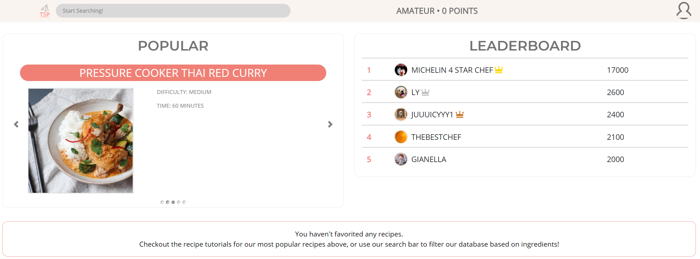

Project: The Social Plate
The Social Plate is a simple web application; it aims to minimize problems that most recipe apps are plagued with. TSP allows users to complete streamlined, step-by-step cooking tutorials without any clutter, all while allowing users to compete against other users through a point / achievement system.
As the Software Development Lead for this project, I led and assisted a team of 10 developers in both the frontend and back development, while following MVC design architecture. By creating a development schedule for all developers, including myself, the TSP team was able to develop with all documentation of code and use cases. In addition this, I helped backend development by developing API endpoints with Node.js and Express.js server code. With React, I was able to develop frontend code, while utilizing Javascript, HTML, CSS, and Bootstrap, while using Axios calls. I also created and maintained the NoSQL database with Google Firebase.